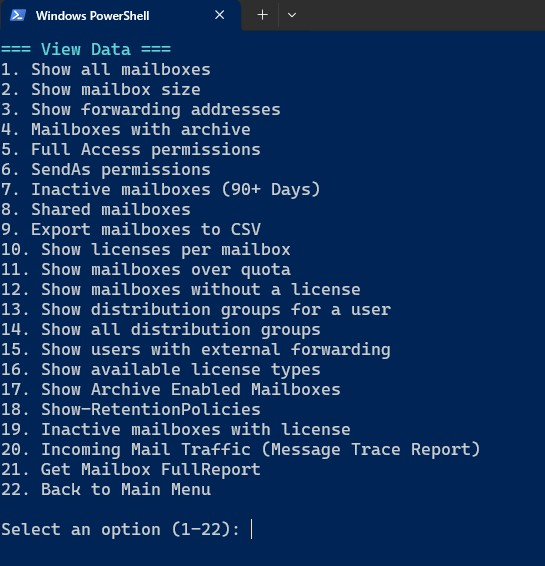

מדריך שימוש בסקריפט ExchangeOnlineManagement_with_export.ps1
🎯 מטרת הסקריפט
הסקריפט נועד להקל על ניהול סביבת Exchange Online ו־Microsoft 365 דרך PowerShell, כולל התחברות אוטומטית, הפעלת פונקציות נפוצות, הפקת דוחות, ורישום שגיאות לקובץ לוג.
📥 הורדת הסקריפט
שים את הקובץ בתיקיה נגישה, לדוגמה: C:\ps\
📦 מודולים נדרשים
לפני ההרצה יש לוודא שהמודולים הבאים מותקנים:
ExchangeOnlineManagementMicrosoft.Graph(או רכיבים ספציפיים כמוMicrosoft.Graph.Users)
התקנת מודולים:
Install-Module ExchangeOnlineManagement -Scope CurrentUser
Install-Module Microsoft.Graph -Scope CurrentUser
ייתכן שתידרש להריץ את הפקודה הבאה אם לא מוגדרת מדיניות:
ייתכן שתידרש להריץ את הפקודה הבאה אם הקובץ חסום:Set-ExecutionPolicy RemoteSigned -Scope CurrentUserUnblock-File -patch C:\ps\ExchangeOnlineManagement_with_export.ps1
▶️ הרצת הסקריפט
cd C:\ps
.\ExchangeOnlineManagement_with_export.ps1
🧠 מבנה הסקריפט בקצרה
- התחברות אוטומטית ל־Exchange Online (אם לא מחובר)
- התחברות ל־Microsoft Graph
- תפריט פעולות לניהול וייצוא
- ניהול שגיאות גלובלי: נרשמות לקובץ
error_log.txt
🛠️ פתרון בעיות נפוצות
| בעיה | פתרון |
|---|---|
Connect-ExchangeOnline שגיאה |
התקן את המודול: Install-Module ExchangeOnlineManagement |
Get-MgContext שגיאה |
התקן את המודול: Install-Module Microsoft.Graph |
שגיאה ב־Split-Path או $MyInvocation |
הרץ מתוך PowerShell רגיל (לא VS Code/ISE) |
| שגיאה הקשורה ל־TLS | הרץ: [Net.ServicePointManager]::SecurityProtocol = [Net.SecurityProtocolType]::Tls12 |
| לא ברור מה הבעיה | פתח את הקובץ error_log.txt בתיקיית הסקריפט ולבדוק את השורה האחרונה |
📂 מיקום לוג שגיאות
הקובץ error_log.txt ייווצר אוטומטית בתיקיית הסקריפט ויכלול:
- שגיאות
✅ המלצות
- הפעל תמיד את PowerShell כ־Administrator.
- בדוק התחברות לפני הרצת פעולות גדולות.
- אל תשמור סיסמאות בקובץ.
- גבה את הסקריפט לפני שינוי.
✅ כך נראה התפריט

בהצלחה בניהול Exchange Online!